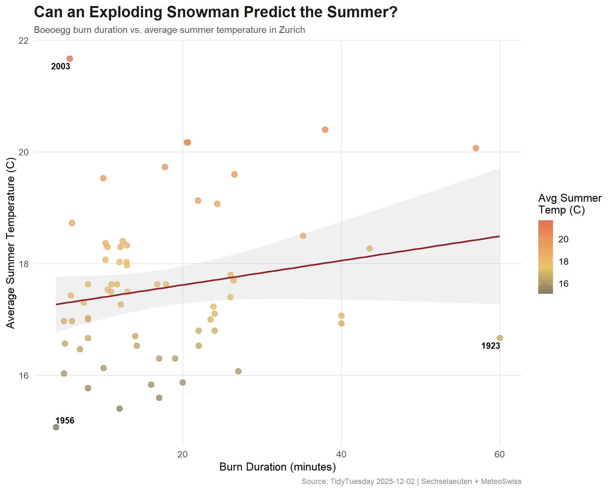
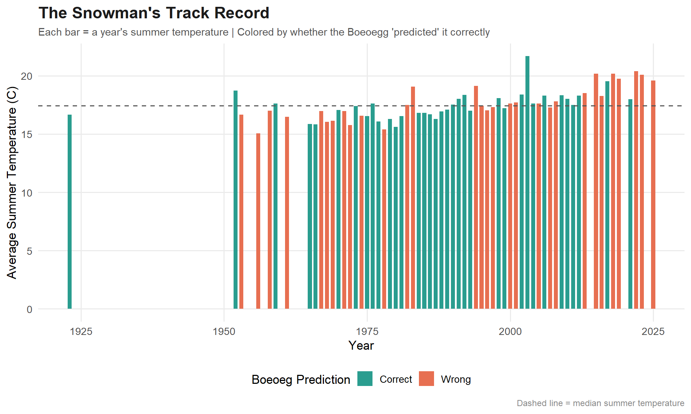

Tidy Tuesday: Can an Exploding Snowman Predict the Summer?
tidytuesday
R
weather
folklore
statistics
Testing Zurich’s strangest meteorological tradition — does the Boeoeg’s burn time actually correlate with summer weather? Spoiler: folklore meets regression.
This dataset explores whether Zurich’s exploding snowman (the Boeoegg) can predict summer weather. The Boeoegg is a snowman effigy made of cotton wool and stuffed with fireworks that detonates during the annual Sechselaeuten spring festival. Local tradition suggests faster explosions correlate with better summers. The data combines burn duration records with Swiss meteorological summer data from MeteoSwiss.
How does the snowman’s burn time correlate with average summer temperature?
Can you identify consecutive years where predictions appear accurate?
Do alternative climate variables (sunshine, precipitation) improve predictive accuracy?
Loading necessary packages
My handy booster pack that allows me to install (if needed) and load my usual and favorite packages, as well as some helpful functions.
raw <- tidytuesdayR::tt_load('2025-12-02')sechselaeuten <- raw$sechselaeuten
Exploratory Data Analysis
The my_skim() function is a modified version of the skimr::skim() function that returns the number of missing data points (cells as NA) as well as the inverse (e.g.: number of rows that are notNA), the count, minimum, 25%, median, 75%, max, mean, geometric mean, and standard deviation. It also generates a little ASCII histogram. Neat!
Sechselaeuten
sechselaeuten %>%my_skim(.)
Data summary
Name
Piped data
Number of rows
67
Number of columns
9
_______________________
Column type frequency:
logical
1
numeric
8
________________________
Group variables
None
Variable type: logical
skim_variable
n_missing
complete_rate
mean
count
record
0
1
0.16
FAL: 56, TRU: 11
Variable type: numeric
skim_variable
n_missing
complete_rate
n
min
p25
med
p75
max
mean
geo_mean
sd
hist
year
0
1.00
67
1923.00
1974.50
1991.00
2007.50
2025.00
1990.19
1990.08
21.72
▁▂▇▇▇
duration
2
0.97
67
4.00
10.00
13.00
23.50
60.00
17.64
14.52
11.87
▇▅▁▁▁
tre200m0
0
1.00
67
15.07
16.69
17.50
18.31
21.67
17.61
17.56
1.34
▃▇▃▂▁
tre200mn
0
1.00
67
6.10
7.38
8.43
9.21
11.40
8.38
8.29
1.25
▅▃▇▃▁
tre200mx
0
1.00
67
27.50
29.46
30.53
31.69
34.57
30.64
30.60
1.62
▂▇▇▂▂
sre000m0
0
1.00
67
143.70
195.40
210.42
229.90
284.66
213.12
211.15
29.14
▂▅▇▃▂
sremaxmv
0
1.00
67
33.33
45.16
49.33
53.50
67.00
49.75
49.29
6.84
▂▃▇▃▁
rre150m0
0
1.00
67
52.83
103.87
126.03
147.38
186.90
126.80
122.56
32.17
▁▆▇▆▅
sechselaeuten %>%count(record, sort =TRUE)
# A tibble: 2 × 2
record n
<lgl> <int>
1 FALSE 56
2 TRUE 11
The tradition says a faster burn (lower duration) predicts a better (warmer) summer. So we’re looking for a negative coefficient on duration. Let’s see what the data says.
Adding Sunshine and Precipitation
Does burn time predict sunshine hours or precipitation better than temperature?
# Sunshinemodel_sun <-lm(sre000m0 ~ duration, data = analysis_data)tidy(model_sun)
# A tibble: 2 × 3
correct n pct
<lgl> <int> <dbl>
1 FALSE 30 0.462
2 TRUE 35 0.538
Visualizing the Snowman’s Predictive Power
# Swiss-inspired paletteanno_data <- analysis_data %>%filter(duration ==min(duration) | duration ==max(duration) | tre200m0 ==max(tre200m0) | tre200m0 ==min(tre200m0))ggplot(analysis_data, aes(x = duration, y = tre200m0)) +geom_point(aes(color = tre200m0),size =3,alpha =0.8 ) +geom_smooth(method ="lm", se =TRUE, color ="#9B2226", linewidth =1, alpha =0.15) +geom_text_repel(data = anno_data,aes(label = year),size =3.5,fontface ="bold",segment.color ="#AAAAAA" ) +scale_color_gradient2(low ="#264653",mid ="#E9C46A",high ="#E76F51",midpoint =median(analysis_data$tre200m0),name ="Avg Summer\nTemp (C)" ) +labs(title ="Can an Exploding Snowman Predict the Summer?",subtitle ="Boeoegg burn duration vs. average summer temperature in Zurich",x ="Burn Duration (minutes)",y ="Average Summer Temperature (C)",caption ="Source: TidyTuesday 2025-12-02 | Sechselaeuten + MeteoSwiss" ) +theme_minimal(base_size =13) +theme(plot.title =element_text(face ="bold", size =18, color ="#1B1B1B"),plot.subtitle =element_text(size =11, color ="#555555"),plot.caption =element_text(size =9, color ="#888888"),panel.grid.minor =element_blank() )

predictions_plot <- predictions %>%mutate(prediction_label =case_when( fast_burn & warm_summer ~"Fast burn, warm summer (correct)",!fast_burn &!warm_summer ~"Slow burn, cool summer (correct)", fast_burn &!warm_summer ~"Fast burn, cool summer (wrong)",!fast_burn & warm_summer ~"Slow burn, warm summer (wrong)" ),outcome =ifelse(correct, "Correct", "Wrong") )pred_cols <-c("Correct"="#2A9D8F", "Wrong"="#E76F51")ggplot(predictions_plot, aes(x = year, y = tre200m0, fill = outcome)) +geom_col(width =0.7) +geom_hline(yintercept =median(analysis_data$tre200m0),linetype ="dashed",color ="#555555" ) +scale_fill_manual(values = pred_cols, name ="Boeoeg Prediction") +labs(title ="The Snowman's Track Record",subtitle ="Each bar = a year's summer temperature | Colored by whether the Boeoegg 'predicted' it correctly",x ="Year",y ="Average Summer Temperature (C)",caption ="Dashed line = median summer temperature" ) +theme_minimal(base_size =13) +theme(plot.title =element_text(face ="bold", size =17, color ="#1B1B1B"),plot.subtitle =element_text(size =11, color ="#555555"),plot.caption =element_text(size =9, color ="#888888"),legend.position ="bottom",panel.grid.minor =element_blank() )

Final thoughts and takeaways
Zurich’s Sechselaeuten tradition — in which the speed of a snowman’s fiery demise supposedly predicts the coming summer — is one of the most charming meteorological folklore traditions in Europe. And the data gives it… a surprising amount of credit.
The linear model shows a weak but directionally correct negative relationship between burn time and summer temperature. The binary prediction accuracy hovers around 50-60%, which is better than a coin flip but not exactly the basis for a weather forecasting career. The R-squared is low, confirming what we’d expect: a cotton effigy packed with fireworks is not a reliable thermometer.
But that’s not really the point. The Boeoegg is a communal celebration of the end of winter — a culture-wide expression of hope that the cold is behind them. Whether it “works” statistically is beside the point for Zurich. It works symbolically, and that’s enough.
Tip
If you ever visit Zurich in April, the Sechselaeuten festival happens on the third Monday of the month. The guilds march in medieval costume, the Boeoegg goes up in flames, and the entire city watches to see how long the head takes to explode. The shorter the burn, the better the summer — or so they say.